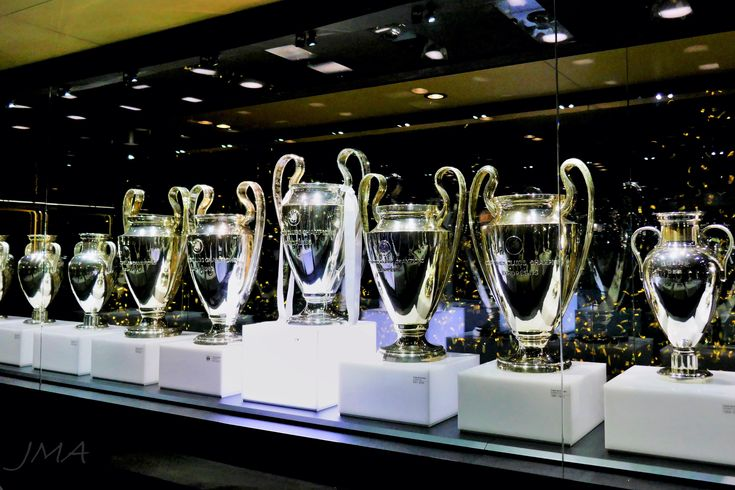
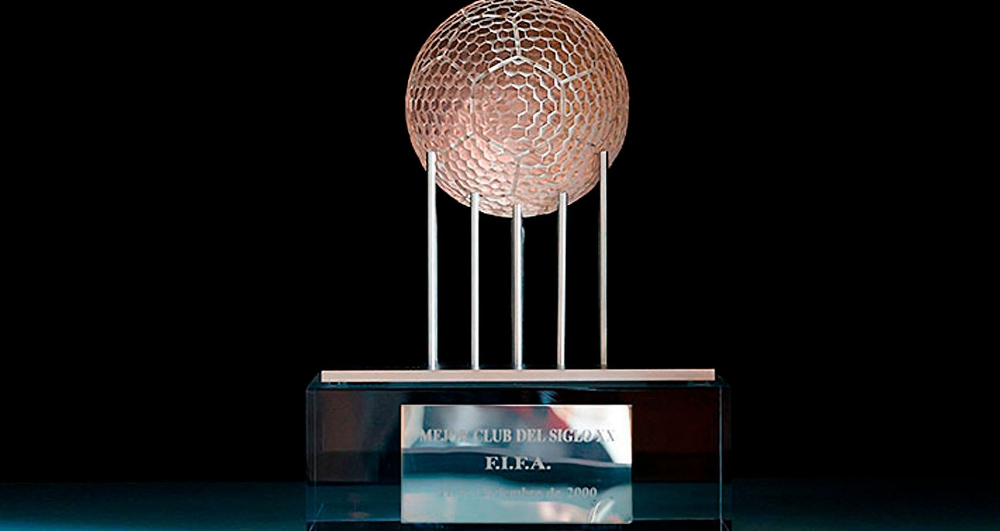
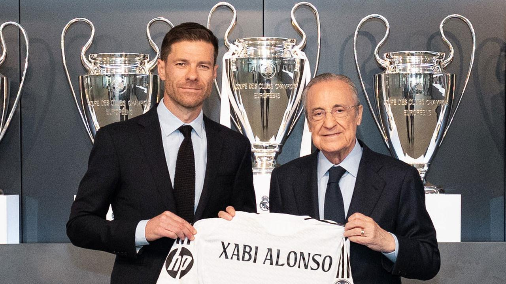

Apa Itu Real Madrid? Profil Klub, Visi & Vilosofi, dan sejarah galacticos
sumber : realmadrid.com, 04 Agustus 2025
Profil klub Real Madrid
Real Madrid Club de Fútbol adalah klub sepak bola profesional yang berbasis di Madrid, Spanyol. Klub ini berkompetisi di La Liga, tingkat teratas sepak bola Spanyol. Didirikan pada tahun 1902 sebagai Madrid Football Club, secara tradisional mengenakan kostum kandang putih. Gelar kehormatan Real adalah bahasa Spanyol untuk ("dari kerajaan") dan dianugerahkan ke klub oleh Raja Alfonso XIII pada tahun 1920, bersama-sama dengan mahkota kerajaan di lambang klub. Klub ini telah memainkan pertandingan kandang di Stadion Santiago Bernabéu dengan kapasitas 85.454 di pusat kota Madrid sejak tahun 1947. Klub ini merupakan salah satu klub sepak bola terkaya di dunia dalam hal pendapatan, senilai €968,3 juta dan total aset yang senilai €7,2miliar (atau $7,2 miliar) di 2019.[3][4] Nilai klub ini diperkirakan mencapai $6,6 miliar pada tahun 2024, menjadikannya klub sepak bola paling berharga di dunia. Pada tahun 2024, klub ini menjadi klub sepak bola pertama yang menghasilkan pendapatan sebesar €1 miliar ($1,08 miliar).
Visi & Filosofi
Real Madrid memiliki visi untuk terus menjadi klub sepak bola terbaik dan paling berpengaruh di dunia, baik dalam hal prestasi maupun identitas. Filosofi klub ini berakar pada mental juara, di mana setiap pemain dituntut untuk memiliki ambisi kuat, kerja keras, dedikasi tinggi, serta disiplin dalam menjaga performa di dalam maupun luar lapangan. Real Madrid percaya bahwa kemenangan bukan hanya soal kemampuan, tetapi juga mengenai harga diri dan tanggung jawab untuk menjaga nama besar klub yang telah dibangun sejak lama. Selain itu, Real Madrid juga menjunjung nilai kebanggaan dan loyalitas, baik untuk para pemain maupun pendukungnya di seluruh dunia. Hal ini tercermin melalui moto “Hala Madrid y Nada Más” yang bermakna bahwa kecintaan dan dukungan kepada klub adalah sesuatu yang penuh komitmen, tanpa ragu dan tanpa banding. Dengan demikian, Real Madrid bukan hanya klub sepak bola, tetapi simbol kejayaan, kebanggaan, dan tradisi kemenangan.
Sejarah
Era Galácticos (2000-2006)
Presiden klub Florentino Pérez memperkenalkan filosofi “Galácticos”, yaitu mendatangkan pemain terbaik dunia, baik dari segi kualitas maupun nilai komersial. Beberapa pemain yang direkrut:
Zinedine Zidane, Ronaldo Nazário, David Beckham, Luis Figo, Roberto Carlos Era ini meningkatkan popularitas global Real Madrid, meskipun prestasi tidak selalu stabil. Namun, klub tetap meraih Liga Champions 2002, dengan gol legendaris voli Zidane.
Era Cristiano Ronaldo dan Dominasi Eropa Baru (2009-2018)
Pada 2009, Real Madrid mendatangkan Cristiano Ronaldo, transfer yang menjadi titik balik besar. Bersama bintang lain seperti:
Karim Benzema, Gareth Bale, Luka Modrić, Sergio Ramos Real Madrid kembali menjadi raja Eropa. Prestasi terbesar era ini adalah menjuarai Liga Champions 4 kali dalam 5 tahun, termasuk 3 kali berturut-turut (2016, 2017, 2018) di bawah pelatih Zinedine Zidane. Ini belum pernah terjadi sebelumnya di era modern.
Era Transisi dan Regenerasi (2019-2025)
Setelah kepergian Cristiano Ronaldo pada 2018, banyak yang meragukan Real Madrid. Namun, klub berhasil membangun skuad baru sambil mempertahankan pemain kunci. Pemimpin dalam era baru ini antara lain:
Karim Benzema, Luka Modrić, Toni Kroos, Thibaut Courtois, Vinícius Jr, Rodrygo, Federico Valverde, Jude Bellingham (datang 2023, menjadi bintang utama) Real Madrid kembali menjadi juara Liga Champions 2022 di bawah pelatih Carlo Ancelotti, memperkuat status klub sebagai penguasa Eropa. Pada 2024-2025, Real Madrid terus bersaing di level tertinggi dengan mengutamakan kombinasi pemain muda berbakat dan pemain berpengalaman. Klub tetap mempertahankan identitasnya sebagai:
Klub dengan mental juara, Klub dengan prestige dan sejarah panjang, Klub dengan penggemar global terbesar di dunia
Trofi
 Coach
Xabier Alonso Olano (lahir 25 November 1981) adalah seorang manajer sepak bola profesional Spanyol dan mantan pemain yang merupakan pelatih kepala klub La Liga Real Madrid dan mantan pemain yang merupakan pelatih kepala klub La Liga Real Madrid . Secara luas dianggap sebagai salah satu gelandang terhebat di generasinya, ia dikenal karena jangkauan umpan dan tembakan jarak jauhnya. 